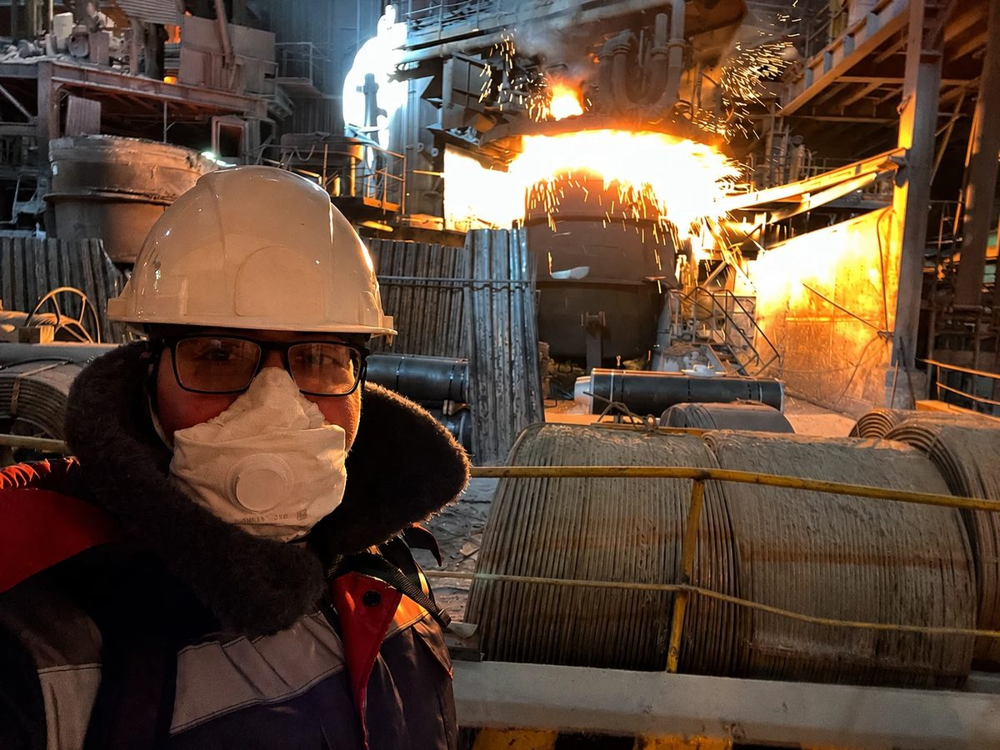
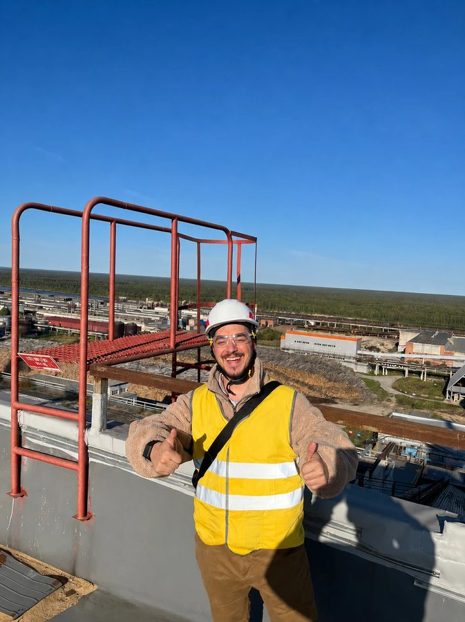

Helping owners make decisions that shape business value
I work with owners and executives on transaction reviews, strategy, revenue and margin opportunities. I lead each engagement personally and bring in the team and specialists it needs
Work experience
I help businesses grow and improve performance
Choose one or more areas and industries
Adjust the areas and industries to find matching cases
RocketTechIT strategy and portfolio managementPrepared the IT strategy and initiative-review system and introduced the working toolkit to the teamView project
StatusWorking strategy and process presented, portfolio under review- Situation
- Manufacturing needed IT linked to economics, risks and development priorities
- Task
- Connect IT strategy, initiative assessment and team development to business priorities
- My actions
- Structured diagnostics, measures and architecture. Designed assessment, initiative briefs and time-use diagnostics, linking changes to benefit owners
- Result
- Prepared strategy and assessment system, presented toolkit to team. Management reviews priorities and launch conditions
- Team and collaboration
- My role
Portfolio lead and IT adviser linking economics, owners and decision stages
- Business stakeholderInitiative owners
Contribute information for register and initiative development
- Business stakeholderClient IT team
Discusses the programme to develop team working practices
- Business stakeholderInitiative owners
- Materials for the client
- Working 2027–2029 IT strategyContents
- Diagnostics, target measures
- Architecture, initiatives
- Benefit owners, launch conditions
Application: To align business IT priorities with management
- Initiative register, briefs and benefits calculatorContents
- Statuses, briefs
- Benefit calculations
Application: To prepare initiatives for management review
- Review rules and decision logContents
- Reviews, stage transitions
- Decisions, owner follow-ups
Application: To prepare initiative assessment and decision follow-through
- Time-use diagnostic optionsContents
- Two measurement options
- Self-study form
Application: To discuss workload, product ownership and working practices
- Portfolio work
- 2027–2029 IT strategy
- Digital priorities and architecture
- Initiative briefs and assessment
- 2027 project portfolio
- IT-team diagnostic and development
RocketTechData platform and management analyticsInitial data components have been accepted and HR has received reporting and working toolsView project
StatusComponents partly accepted, working versions under validation- Situation
- Finance, HR and veterinary reporting needed aligned sources and calculations
- Task
- Align shared data, reporting, infrastructure and phased acceptance
- My actions
- Aligned sources, datasets, quality and infrastructure. Coordinate business and technical owners, reconciliation and acceptance
- Result
- Initial data components accepted, HR received reporting and tools. Procurement, sales reconciliation and infrastructure validation continue
- Team and collaboration
- My role
Coordinate business owners and specialists, align requirements and acceptance
- Delivery teamData engineers and infrastructure team
Implement data and infrastructure components
- Delivery teamSpecialist analysts
Develop calculations, data loads and technical reporting content
- Business stakeholderProcurement, sales and HR business owners
Refine requirements, reconcile measures, review working versions
- Delivery teamData engineers and infrastructure team
- Materials for the client
- Data and infrastructure specificationsContents
- Sources, ingestion, marts, quality
- Access, recovery
- Releases, monitoring
Application: To align data and infrastructure requirements
- Procurement, sales and HR reporting dashboardsContents
- Procurement, sales, HR measures
- Working versions
Application: To reconcile measures with business and data owners
- Data-reconciliation and acceptance matricesContents
- Source discrepancies
- Control scenarios, client feedback
Application: To prepare reporting component validation and acceptance
- Two migration-record workbooksContents
- Migration-record tools
- Checked formulas, revisions
Application: To support ongoing migration record keeping
- Portfolio work
- Shared data layer, infrastructure and recovery
- Procurement: discrepancies against 1C reduced from 4.9% to 0.0% in the checked dataset
- Sales: requirements and reconciliation with the commercial team
- HR: five reporting tabs and the first accepted dataset
- Migration records: two workbooks with expiry controls
RocketTechProduction economics and efficiencyFinance accepted the initial margin report and production received a daily decision dashboardView project
StatusAccepted reporting, prototypes under validation and pilot proposals- Situation
- Finance, sales and production needed shared cost, output and sales decisions
- Task
- Align cost methodology, product mix and production decision tools
- My actions
- Aligned finance requirements and solution boundaries. Coordinate methodology, production, developers, calculation checks, reporting acceptance and initiatives
- Result
- Finance accepted initial margin report, production received daily dashboard. Client confirmed planning approach. Team validates prototype and calculations
- Team and collaboration
- My role
Lead projects across production, finance, methodology and development
- ExpertiseMethodologist and economists
Develop methodology and financial calculations
- Delivery teamAnalysts and developers
Implement calculations, prototypes and the production dashboard
- Business stakeholderProduction, finance and commercial teams
Agree scenarios, control examples and business-result acceptance
- ExpertiseMethodologist and economists
- Materials for the client
- Cost methodology and product-mix calculatorContents
- Process-stage cost allocation
- Control calculations, product mix
Application: To align financial measures with the client
- Margin report and production dashboardContents
- Margins
- Production, stocks, prices
Application: To support acceptance of daily decision tools
- Planning prototype and loss diagnosticContents
- Planning, product mix
- Loss types, production points
- Improvement levers
Application: To test production hypotheses and improvement potential
- Workforce and computer-vision pilot proposalsContents
- Scope, stages, validation criteria
- Time use, counting points
- Economics
Application: To discuss pilots and assess their economics
- Portfolio work
- Costing and margin: initial report accepted, methodology under review
- Production and sales planning: working prototype
- Production losses: diagnostic and initiative programme
- Daily production dashboard: four pages delivered to the client
- Raw materials and semi-finished goods: discovery and scoping
- Productivity and staffing: diagnostic proposal
- Computer vision: pilot brief
RocketTechVeterinary digitalisationThe electronic forms recorded 169 entries in their first five daysView project
StatusForms in early use, analytics in design- Situation
- Veterinary staff needed electronic inspection, necropsy and poultry-house acceptance records
- Task
- Unify inspection, necropsy and poultry-house acceptance in electronic data collection
- My actions
- Gathered requirements, coordinated analysts and IT. Brought three forms into use with team, organised acceptance, training and data-quality analysis
- Result
- Users entered 169 records in the first five days. Veterinary-analytics and medicine-record requirements remain under review
- Project evidence
Early adoption 169Records in the first five days- Team and collaboration
- My role
Gathered requirements, coordinated analysts and IT, led acceptance and training
- Delivery teamForms-development team
Implements web forms and subsequent revisions
- ExpertiseSpecialist analyst
Develops the specialist veterinary-analytics workstream
- Business stakeholderVeterinary staff, accounting and IT
Align processes, sources, requirements. Veterinary staff own domain decisions
- Delivery teamForms-development team
- Client received
- Three web forms and user instructionsContents
- Shared veterinary-data entry
- Instructions, feedback
Application: To support user training and form acceptance
- Report on the first five days of useContents
- Five-day completion
- Initial data quality
Application: To define further veterinary form revisions
- Veterinary-analytics specificationContents
- Process mapping
- Accounting-data sources
Application: To align veterinary, accounting, analyst and IT requirements
- Portfolio work
- Electronic inspection forms
- Electronic post-mortem forms
- Poultry-house acceptance
- Veterinary analytics
- Medicine accounting and batch movements
RocketTechAI and internal-process automationThe main release of the AI-assisted 1C item-card generator is live, with quality acceptance continuingView project
StatusGenerator live, further scenarios in discovery- Situation
- Procurement master data required manual information gathering and product-card checks
- Task
- Take 1C draft-card generator through business acceptance, define further automation
- My actions
- Tested generator, issued six developer briefs with validation criteria. Coordinate acceptance and prioritised further scenarios with business owners
- Result
- Team launched main generator release in production. Quality acceptance continues, legal scenarios and 1C reconciliation are being explored
- Team and collaboration
- My role
Manage generator quality and scenario development with business owners
- Delivery teamGenerator developers
Receive domain briefs and implement generator revisions
- Business stakeholder1C lead and business owners
Support reconciliation, controls, acceptance and applicability checks
- Business stakeholderLegal function
Contributes to discovery and prioritisation of domain scenarios
- Delivery teamGenerator developers
- Materials for the client
- 1C draft-card generatorContents
- Draft 1C cards
- Domain tests
Application: To check domain quality before business acceptance
- Specification and test logContents
- Generator requirements
- Paired-test results, observations
Application: To prepare subsequent domain checks of the generator
- Six developer briefs with validation criteriaContents
- Defects, inputs
- Reproduction steps
- Fix-validation criteria
Application: To resolve defects and validate revised results
- Prioritised legal and 1C-reconciliation scenariosContents
- Legal scenarios, reconciliation
- Controls
- Domain-check plan
Application: To prioritise further automation with business owners
- Portfolio work
- AI-assisted draft item cards for 1C
- Domain-quality review of generated cards
- Cross-system reconciliation automation
- Three AI scenarios for legal work
- ConsultantPlus integration requirements
RocketTechOnline sales and pricing decisionsDelivered the online-store diagnostic and development roadmapView project
StatusDiagnostic completed, next stages under discussion- Situation
- Online growth needed aligned product, commercial and technology priorities
- Task
- Prepare store diagnostics, development roadmap and market-price monitoring concept
- My actions
- Coordinated diagnostics and measures, discussed target model with management. Structured price-monitoring sources, signals and screen concepts
- Result
- Delivered store diagnostic and roadmap. Presented market-price monitoring concept to commercial lead
- Team and collaboration
- My role
Aligned product, technology and commercial work with management and teams
- Delivery teamOnline-store diagnostic team
Conducts the online-store diagnostic
- Decision-makingClient management
Discusses the target model and development priorities
- Delivery teamOnline-store diagnostic team
- Client received
- Product, technology and process diagnosticContents
- Product, end-to-end process
- Architecture, failure points
Application: To discuss the store target model with management
- Issue register, performance measures and roadmapContents
- Issues, actions
- Measures, implementation sequence
Application: To discuss store development priorities and sequence
- Price-monitoring concept and launch planContents
- Seven pricing signals
- Overview, item screens
- Commercial proposal, implementation plan
Application: To discuss conditions for launching price monitoring
- Portfolio work
- Online-store diagnostic
- Product and team
- Technology constraints
- Development roadmap
- Market-price monitoring concept
Independent practiceBuilt the acquisition case for a dairy plantInvestment and credit committees approved the acquisition case for a business valued at about $16mView project
StatusInvestment and credit committees approved the case- Situation
- Buyer assessed a dairy business valued about $16m and acquisition debt
- Task
- Test plant economics, purchase price and workable transaction structure
- My actions
- Led financial and commercial diligence with ex-BCG project leader. Built acquisition, credit and operating models, valued synergies
- Result
- Investment and credit committees approved financial and commercial acquisition case for business valued about $16m
- Team and collaboration
- My role
Led buy-side financial and commercial work
- ExpertiseFormer BCG engagement manager
Jointly developed acquisition financial and commercial analysis
- ExpertiseFormer BCG engagement manager
- Client received
- Commercial due diligenceContents
- Commercial dairy acquisition case
- Financial, operating models
Application: To support investment and credit committee acquisition reviews
- Acquisition, bank-credit and operating modelsContents
- Leveraged acquisition
- Credit, operating models
- Cash flows
Application: To develop the buyer’s transaction financing and structure
- Cash-flow and synergy valuationContents
- Cash flows
- Production, procurement, logistics synergies
Application: To establish acquisition economics for the buyer
Independent practiceClosed the sale of an apparel brandThe business, valued at about $2m, was sold to a strategic investor with terms and contracts agreedView project
StatusTransaction closed- Situation
- Apparel-brand owner prepared a sale to a strategic investor
- Task
- Prepare brand for sale, find strategic investor, run transaction
- My actions
- Led seller-side process: prepared valuation and investment materials, attracted strategic investor, agreed terms and coordinated contracts
- Result
- Business valued about $2m sold to a strategic investor. Terms and contracts agreed
- Team and collaboration
- My role
Led the entire sell-side process
Professional collaboration
- Strategic investor and sellerIntroduced investor, aligned terms and documents with both parties
- Client received
- Investment materials and valuationContents
- Business presentation
- Valuation for strategic investor
Application: To support seller negotiations on sale terms
- Agreed transaction agreementsContents
- Confidentiality agreement
- Key terms
- Shareholders’ agreement
- Sale-and-purchase agreement
Application: To align transaction documents and terms between parties
Independent practiceValued a cosmetics brand for the buyerA scenario valuation of a 50%+1 controlling stake and a negotiation position were prepared for the buyerView project
StatusScenario valuation prepared for the buyer- Situation
- Buyer assessed cosmetics-brand control, 50% + 1, and seller’s forecast
- Task
- Establish controlling-stake value range and test seller’s forecast
- My actions
- Normalised earnings, modelled scenarios, applied income and market valuations, structured 50%+1 acquisition with part of consideration contingent on future performance
- Result
- Prepared scenario valuation of 50%+1 controlling stake and negotiation position for buyer
- Team and collaboration
- My role
Led buy-side diligence, modelling and valuation
- Materials for the client
- Scenario model and normalised earningsContents
- One-off earnings adjustments
- Scenarios
Application: To assess the business and buyer transaction scenarios
- Cash-flow and comparable-multiple valuationContents
- Cash-flow valuation
- Market multiples
Application: To support the buyer’s position on transaction price
- 50% + 1 acquisition structureContents
- Controlling stake
- Performance-dependent consideration
Application: To discuss acquisition structure and transaction terms
Earlier projectsPrepared a hotel valuation for sale negotiationsThe client received a Sochi asset valuation reflecting construction costs and supporting negotiation materialsView project
StatusValuation prepared for negotiations- Situation
- Sochi hotel-asset seller prepared for buyer negotiations
- Task
- Value asset and prepare seller’s negotiation position
- My actions
- Valued asset including construction costs, prepared financial materials for buyer
- Result
- Client received Sochi asset valuation reflecting construction costs and negotiation materials
- Team and collaboration
- My role
Led valuation and seller’s financial position
- Client received
- Valuation incorporating construction costsContents
- Asset valuation
- Construction costs
Application: To support valuation discussions with the buyer
- Financial materials for negotiationsContents
- Valuation
- Seller’s financial rationale
Application: To support agreement on asset sale terms
GLONASSDefended GLONASS’s five-year diversification strategyThe strategy was defended before the Board and minister. Its target is to triple EBITDA in five yearsView project
StatusStrategy defended, financial impact remains a target- Situation
- GLONASS shaped five-year company development and new-business plan
- Task
- Define priorities, connect corporate and functional strategies to five-year plan
- My actions
- Developed financial model, ran four strategy sessions, assembled corporate and functional strategies
- Result
- Defended five-year strategy before board and transport minister. Target: tripling EBITDA over five years
- Team and collaboration
- My role
Transformation-office lead, corporate-strategy owner reporting directly to CEO
Professional collaboration
- GLONASS CEOReported directly to CEO, accountable for corporate strategy
- Client received
- Five-year corporate and functional strategiesContents
- Five-year corporate horizon
- Functional priorities
Application: To align development directions and corporate initiatives
- Financial modelContents
- Five-year calculations
- Financial objectives
Application: To discuss the financial basis for corporate decisions
- Materials for four strategy sessionsContents
- Four completed sessions
- Corporate, functional decisions
Application: To consolidate corporate and functional decisions into strategy
Independent practiceDeveloped a growth strategy for a business-software providerApproved strategy. Speech prototype: 10,000 calls and 7 rejection reasonsView project
StatusStrategy approved, speech analytics at prototype stage- Situation
- Cloud-services provider assessed growth, AI adoption and customer rejection reasons
- Task
- Define growth model and commercial actions reflecting AI and rejection reasons
- My actions
- Compared business models and AI adoption, segmented markets, co-developed strategies and initiative plan. Built call-analysis prototype and recommendations addressing rejection reasons
- Result
- Shareholders approved strategy: $120m revenue target by 2030 from $24m. Prototype covers 10,000 calls and seven rejection reasons
- Project evidence
Revenue: baseline and strategic target, $m Scale starts at zero. $120m is the strategy target- Team and collaboration
- My role
Analysed models and markets, co-developed strategy, built speech-analytics prototype
- ExpertiseFormer McKinsey partners
Worked together on the company strategy
- ExpertiseFormer McKinsey partners
- Client received
- Corporate, commercial and functional strategiesContents
- Business-model comparison
- Market segmentation
- AI adoption approaches
Application: To align company growth directions with shareholders
- Scenarios and initiative planContents
- Strategic scenarios
- Initiatives, growth objectives
Application: To support shareholder discussion and approval of plans
- Call-analysis prototypeContents
- Customer-call transcripts
- Ten thousand calls
Application: To identify customer rejection reasons from calls
- Seven rejection reasons and sales recommendationsContents
- Seven rejection reasons
- Call-analysis recommendations
Application: To prepare sales recommendations addressing rejection reasons
McKinsey & CompanyBenchmarked international video-service practicesVideo-service benchmarking and product proposals were prepared for the project teamView project
StatusBenchmark research prepared- Situation
- McKinsey team assessed video-streaming development options
- Task
- Study international video-service development practices
- My actions
- Compared international video services, prepared product-development recommendations
- Result
- Video-service benchmarking and product proposals prepared for project team
- Team and collaboration
- My role
McKinsey & Company Business Analyst Intern
- Delivery teamMcKinsey & Company project team
Worked on the video-service development project
- Delivery teamMcKinsey & Company project team
- Materials for the client
- International video-service benchmarkingContents
- International practices
- Video-service development
Application: To prepare recommendations for further product development
- Product-development recommendationsContents
- International benchmarks
- Product proposals
Application: To supplement project materials on product development
Yakov & PartnersDeveloped a distribution model with the teamThe team developed a distribution model with an estimated margin-improvement potential of up to 10 ppView project
StatusModel developed, impact is estimated potential- Situation
- Agricultural distribution depended on Russian demand and international supply economics
- Task
- Understand demand, select supply and distribution channel with better economics
- My actions
- Researched agricultural demand nationwide, studied China and Poland supply chains, compared operating models
- Result
- Team developed distribution model with estimated margin-improvement potential up to 10 pp
- Team and collaboration
- My role
Owned research design and data analysis
- Delivery teamYakov & Partners project team
Developed the distribution model following research
- Delivery teamYakov & Partners project team
- Materials for the client
- Nationwide demand-research designContents
- Nationwide research design
- Agricultural demand
Application: To assess demand for distribution channel selection
- China and Poland supply-chain analysisContents
- China supply chains
- Poland supply chains
Application: To compare distribution channel operating options
- Distribution-channel modelContents
- Demand, supply chains
- Operating options
Application: To estimate potential margin improvement for the channel
McKinsey & CompanyContributed analysis to an emirate’s development strategyThe team prepared analytical materials supporting a UAE emirate’s sustainability strategyView project
StatusStrategy analysis prepared by the project team- Situation
- UAE emirate defined sustainability priorities and investment-decision basis
- Task
- Define sustainability priorities and basis for investment decisions
- My actions
- As McKinsey Business Analyst Intern, contributed to team’s analytical materials
- Result
- Team prepared analytical materials supporting a UAE emirate’s sustainability strategy
- Team and collaboration
- My role
McKinsey & Company Business Analyst Intern
- Delivery teamMcKinsey & Company project team
Prepared materials for emirate’s sustainable-development strategy
- Delivery teamMcKinsey & Company project team
- Materials for the client
- Sustainable-development analysisContents
- Emirate sustainability
- Strategy analysis materials
Application: To prepare analysis for the emirate’s sustainability strategy
McKinsey & CompanyDeveloped a dynamic-routing transport pilot conceptMoscow Region connectivity analysis and an on-demand transport pilot informed the strategy materialsView project
StatusAnalysis and pilot concept prepared- Situation
- Moscow region transport needed connectivity analysis and service options
- Task
- Prepare analytical basis for transport-system development decisions
- My actions
- Contributed Moscow region connectivity analysis, prepared dynamic-routing minibus pilot concept
- Result
- Moscow Region connectivity analysis and on-demand transport pilot concept informed strategy materials
- Team and collaboration
- My role
McKinsey Business Analyst Intern owning individual transport-strategy tasks
- Delivery teamMcKinsey & Company project team
Assembled the regional transport-strategy materials
- Delivery teamMcKinsey & Company project team
- Materials for the client
- Transport-connectivity analysisContents
- Moscow region connectivity
- Project analysis
Application: To develop connectivity analysis for regional transport strategy
- Demand-responsive transport pilot conceptContents
- Demand-responsive minibus
- Pilot service
Application: To discuss pilot services within the transport strategy
Earlier projectsModelled the economics of a taxi fleet launchThe fleet financial model, driver incentives and application requirements are prepared for launchView project
StatusEconomics and launch decisions prepared- Situation
- Taxi venture launch required economic and operating assessment
- Task
- Test venture economics, define operating model for launch
- My actions
- Modelled trip and fleet economics, designed driver incentives, defined app requirements
- Result
- Fleet financial model, driver incentives and application requirements prepared for launch
- Team and collaboration
- My role
Led economic and operational work with founder
- Business stakeholderFounder
Jointly developed launch economics and operating model
- Business stakeholderFounder
- Materials for the client
- Trip and fleet financial modelContents
- Trip economics
- Fleet economics
Application: To develop the financial launch plan with the founder
- Driver-incentive systemContents
- Driver incentives
- Fleet economics
Application: To prepare decisions for the fleet launch
- Application requirementsContents
- Expected functionality
- Economics, operating model
Application: To develop requirements for the digital launch component
Yandex AdvertisingIncreased Yandex display-advertising salesThe department’s display-advertising sales increased by $2.8m a year through analysis and performance reviewsView project
StatusAchieved unit-level result- Situation
- Yandex Advertising’s commercial team developed display-advertising sales
- Task
- Grow sales, embed identified opportunities across commercial team
- My actions
- Developed display-advertising plan-versus-actual analysis, identified variances, worked with managers on regular sales decisions
- Result
- Unit’s display-advertising sales increased by $2.8m annually through analysis and regular performance management
- Team and collaboration
- My role
Internal-consulting project manager for analysis and performance reviews
- Business stakeholderYandex Advertising commercial unit
Received display-advertising analysis and regular performance assessment
- Business stakeholderYandex Advertising commercial unit
- Client received
- Display-advertising plan-versus-actual analysisContents
- Planned, actual sales
- Variances
Application: To support regular assessment of unit commercial performance
- Regular performance reviews with managersContents
- Plan-versus-actual
- Display-advertising effectiveness
Application: To analyse the unit’s display advertising performance
Yakov & PartnersIntroduced production performance managementThe management system was implemented. The team added 100,000 tonnes (+10%) to annual production run-rateView project
StatusImplemented, team result- Situation
- Steel asset needed production stabilisation and higher output within budget
- Task
- Stabilise production, raise output within available budget
- My actions
- Built production-driver tree, launched daily shareholder reporting and PMO. Assembled initiatives, ran three sessions with production managers
- Result
- Team increased annual production run rate by 100,000 tonnes, or 10%
- Project evidence
Team result +100k tIncrease in annualised output+10%Change in annualised output- Team and collaboration
- My role
Led on-site analysis, PMO, technical-economic measures and shareholder reporting
- Delivery teamYakov & Partners team
Delivered the production transformation together on site
- Delivery teamYakov & Partners team
- Client received
- Production-driver tree and performance measuresContents
- Production drivers
- Technical and economic measures
Application: To support daily discussion of output improvement initiatives
- Daily shareholder reportingContents
- Daily production measures
- Stabilisation, output growth
Application: To support shareholder oversight of site production
- Project office and initiative portfolioContents
- Initiatives
- Production reporting
Application: To organise changes and monitor production performance measures
- Materials for three working sessionsContents
- Three completed idea-generation sessions
- Drivers, ideas, initiatives
Application: To connect ideas to the production initiative portfolio
Earlier projectsTrained analysts at a major telecom operatorTraining was delivered to more than 300 analysts at one of the top-four telecom operatorsView project
StatusTraining delivered- Situation
- Top-four telecom analysts needed common approach and practical project tools
- Task
- Train analysts in shared approach and practical project tools
- My actions
- Delivered analyst training at a top-four telecom operator
- Result
- Training delivered to 300+ analysts at a top-four telecom operator
- Team and collaboration
- My role
Analyst trainer
Professional collaboration
- Analysts at a top-four telecom operatorTrained more than three hundred analysts
- Client received
- Training delivered to 300+ analystsContents
- Shared approach
- Practical tools
Application: To support analysts in delivering company project assignments
GLONASSLinked bonuses to goals and individual contributionQuarterly incentives cover 500 employees. Estimated annual payroll savings are approximately $1mView project
StatusSystem implemented, savings estimated- Situation
- GLONASS needed quarterly bonuses linked to goals and employee contributions
- Task
- Tie bonuses to company goals and actual employee contributions
- My actions
- With HR director, implemented quarterly measures, bonus-calculation rules and shared results-review process
- Result
- System covered 500 employees. Estimated annual payroll savings were about $1m
- Project evidence
Incentive system 500Employees covered~$1mEstimated annual payroll savings- Team and collaboration
- My role
Transformation-office head running the project with HR director
- Business stakeholderHR director
Jointly implemented quarterly performance and incentive system
- Business stakeholderHR director
- Client received
- Quarterly performance-measure systemContents
- Quarterly measures
- Company goals, employee contributions
Application: To connect performance assessment with quarterly bonuses
- Bonus-calculation rules and review cycleContents
- Bonus calculations
- Shared review cycle
Application: To support applying the system to 500 employees
Independent practiceModelled target headcount for seven functions at a property developerWorkforce models cover seven functions, with an estimated 10–30% staffing-optimisation potentialView project
StatusTarget workforce model developed- Situation
- A property-development group needed target staffing for seven functions
- Task
- Define target staffing and identify productivity differences
- My actions
- Led up to three people, analysed workload and time use, compared productivity and built driver-based staffing models
- Result
- Developed models for seven functions. Estimated staffing-optimisation potential: 10–30%
- Project evidence
Estimated headcount optimisation potential 10–30%Models cover seven functions- Team and collaboration
- My role
Led delivery and modelled staffing for seven functions
- Delivery teamProject team of up to three
Developed target workforce models under my leadership
- Delivery teamProject team of up to three
- Materials for the client
- Driver-based workforce models for seven functionsContents
- Workload and productivity
- Sales and occupancy
- Production, accounting and facilities
- Target staffing
Application: Establish staffing requirements across seven functions
- Calculators, workload analysis and recommendationsContents
- Time studies
- Output per employee
- Calculations and recommendations
Application: Assess target staffing against actual workloads
McKinsey & CompanyBuilt a bank performance-management modelTargets across 22 business lines are linked to plan-versus-actual reporting in one management modelView project
StatusPerformance-management model and reporting developed- Situation
- An Uzbekistan bank needed consistent goal tracking across 22 business lines
- Task
- Connect bank goals, measures and the management cycle
- My actions
- Within McKinsey’s team, linked 22 business lines to bank goals and developed plan-versus-actual calculation models
- Result
- Leadership received one model linking 22 business lines’ goals to plan-versus-actual reporting
- Team and collaboration
- My role
Business Analyst Intern, owned performance measures and calculation models
- Delivery teamMcKinsey & Company project team
Delivered the bank performance management project
- Delivery teamMcKinsey & Company project team
- Client received
- Goal cascade for 22 business linesContents
- Bank goals
- Measures across 22 business lines
Application: Monitor goal delivery across bank business lines
- Calculation models and plan-versus-actual reportingContents
- Planned and actual business-line results
- Management reporting
Application: Run a consistent goal monitoring cycle
Earlier projectsConsolidated a media group’s sales data in Power BIManagement received a unified Power BI dashboard for sales, performance measures and customer segmentsView project
StatusManagement-analytics system developed- Situation
- A Kazakhstan media business needed consolidated commercial data
- Task
- Unify fragmented sales, performance and customer data
- My actions
- Independently built the commercial data model and Power BI reporting
- Result
- Management received one Power BI dashboard covering sales, performance measures and customer segments
- Team and collaboration
- My role
Independently built the data model and Power BI
- Business stakeholderMedia group management
Received a dashboard of sales, measures and customer segments
- Business stakeholderMedia group management
- Client received
- Commercial data modelContents
- Sales
- Performance measures
- Customer segments
Application: Consolidate commercial data for management reporting
- Power BI reporting on sales, measures and customer segmentsContents
- Sales
- Performance measures
- Customer segments
Application: Monitor media group commercial results regularly
GLONASSBuilt a transformation office reporting to the CEOCreated the strategy and new-business function with a team of five direct reportsView project
StatusOffice established- Situation
- The CEO needed a strategy and new-business function
- Task
- Establish the function reporting to the CEO
- My actions
- Established the transformation office and organised strategy and new-business work
- Result
- Established the office reporting to the CEO, with five direct reports
- Project evidence
Reporting structure - CEO
- Transformation office
- 5 direct reports
- Team and collaboration
- My role
Established the office, led five, reported to CEO
- Delivery teamFive direct reports
Delivered strategy and new business work
- Decision-makingGLONASS chief executive
Directly managed the transformation office lead
- Delivery teamFive direct reports
- Client received
- Strategy and new-business management functionContents
- Corporate strategy
- New businesses
- Direct CEO reporting
Application: Manage strategy and new business development
- Office team: five direct reportsContents
- Five direct reports
- Strategy and new businesses
Application: Organise the established transformation office’s work
GLONASSAssessed demand for satellite connectivityDemand research and investment materials are prepared. More than $80m is the business’s revenue targetView project
StatusInvestment-case development- Situation
- Forestry businesses needed satellite connectivity in remote areas
- Task
- Assess demand and develop the financial case
- My actions
- Researched the product and forestry-sector demand, then built financial models
- Result
- Prepared demand research and investment materials. Revenue target: more than $80m
- Team and collaboration
- My role
Led new businesses, demand research and financial assessment
- Materials for the client
- Forestry-sector demand researchContents
- Forestry companies
- Connectivity needs
- Remote areas
Application: Develop the satellite business investment case
- Financial models and investment materialsContents
- Satellite connectivity economics
- Financial projections
- Development stages
Application: Discuss the new business investment case
GLONASSOversaw UAV-monitoring business developmentA dedicated investment-committee pack was prepared for the unmanned-transport monitoring conceptView project
StatusInvestment-case development- Situation
- GLONASS’s new-business portfolio included unmanned-aircraft flight monitoring
- Task
- Prepare the investment concept for the investment committee
- My actions
- Oversaw preparation of the flight-monitoring concept and investment-committee materials
- Result
- A dedicated unmanned-transport monitoring pack is prepared for the investment committee
- Team and collaboration
- My role
Led the portfolio and oversaw flight-monitoring investment development
- Materials for the client
- Flight-monitoring investment conceptContents
- Market and flight restrictions
- Business model
- Monitoring architecture
Application: Develop the unmanned-aircraft monitoring investment case
- Investment-committee presentationContents
- Concept and competitors
- Implementation stages
- Draft decision
Application: Present flight monitoring to the investment committee
GLONASSDeveloped a logistics-services conceptA freight-services marketplace concept was prepared for review within the investment portfolioView project
StatusConcept development- Situation
- GLONASS considered a freight brokerage platform for businesses
- Task
- Develop the freight-services brokerage platform concept
- My actions
- Developed the commercial logistics-brokerage concept within the new-business portfolio
- Result
- Prepared a freight-services marketplace concept for investment-portfolio review
- Team and collaboration
- My role
Led new businesses and developed the logistics concept
- Materials for the client
- Logistics-services platform conceptContents
- Shippers and carriers
- Shipment tracking
- Electronic documents
- ERA GLONASS data
Application: Assess digital brokerage in freight services
- Investment-development materialsContents
- Market challenges
- Participant value
- ERA GLONASS data application
Application: Develop the logistics platform investment concept
GLONASSPrepared proposals for India and AfricaCommercial proposals were prepared for GLONASS business development in Indian and African marketsView project
StatusProposals prepared- Situation
- GLONASS explored business development in India and Africa
- Task
- Prepare commercial proposals for international business development
- My actions
- Prepared commercial proposals for Indian and African markets
- Result
- Prepared GLONASS business-development proposals for India and Africa
- Team and collaboration
- My role
Led business development and prepared international proposals
- Materials for the client
- Commercial proposals for India and AfricaContents
- Indian market
- African markets
- GLONASS business development
Application: Discuss GLONASS international business growth opportunities
Yandex AdvertisingRedesigned client portfolios and sales trainingClient portfolios and sales training were reworked. The team achieved 5% segment-revenue growthView project
StatusChanges implemented, team result- Situation
- The commercial team developed industry and e-commerce coverage
- Task
- Restructure client portfolios and train sales managers
- My actions
- Restructured portfolios, reassigned clients and launched training through six team leaders and 36 managers
- Result
- Reworked portfolios and training. Team result: 5% segment-revenue growth
- Team and collaboration
- My role
Restructured portfolios and organised commercial team implementation
- Delivery teamSix team leaders
Implemented the portfolio structure and training programme
- Delivery team36 sales managers
Implemented client portfolios and participated in training
- Delivery teamSix team leaders
- Client received
- Industry-based client-portfolio structureContents
- Client databases
- Industries
- E-commerce
Application: Implement industry portfolios through Yandex’s commercial team
- Sales-training programmeContents
- Portfolio reassignment
- Industry specialisation
- Six team leaders
- 36 sales managers
Application: Support implementation of the new portfolio structure
Yandex AdvertisingDeveloped a sales-efficiency programmeAn audit of 70+ staff informed the programme. Potential: $30m annual revenue and 10 pp less non-selling timeView project
StatusProgramme and estimated potential- Situation
- A nationwide time-use audit covered 70+ commercial employees
- Task
- Identify sales-effectiveness opportunities through the time-use audit
- My actions
- Analysed time allocation and developed the commercial-team efficiency programme
- Result
- Estimated programme potential: $30m annual revenue growth, or +2.5%, and a 10 pp reduction in non-core time
- Team and collaboration
- My role
Analysed time use and developed sales-efficiency measures
- Business stakeholderYandex commercial team
Time-use audit covered more than 70 employees
- Business stakeholderYandex commercial team
- Materials for the client
- Time-use audit covering 70+ employeesContents
- 70+ employees
- Time allocation
- Nationwide coverage
Application: Establish evidence for the sales-efficiency programme
- Sales-efficiency programmeContents
- Audit findings
- Efficiency measures
- Estimated revenue potential
- Estimated non-core-time reduction
Application: Assess revenue and working-time improvement potential
Yandex AdvertisingRan a client-business development programmeProject clients achieved 130% of plan versus 115% in the comparison group, a difference of 15 ppView project
StatusProgramme completed- Situation
- The client-business development programme involved 60 sales managers
- Task
- Review client businesses and proposals through project sprints
- My actions
- Reviewed client businesses and proposals with 60 managers, helping develop detailed commercial solutions through sprints
- Result
- Project clients achieved 130% of plan and the comparison group 115%. Difference: 15 pp
- Client-plan attainment
Client plan attainment, % Project clients130%Comparison group115%Difference: 15 pp
- Team and collaboration
- My role
Reviewed client businesses and proposals through sprints
- Business stakeholder60 sales managers
Reviewed client businesses and commercial proposals together
- Business stakeholder60 sales managers
- Client received
- Sprint programme involving 60 managersContents
- 60 sales managers
- Client businesses
- Commercial proposals
- Project sprints
Application: Organise joint development of client commercial solutions
- Client-plan attainment comparison: 130% and 115%Contents
- Project clients: 130%
- Comparison group: 115%
- Difference: 15 pp
Application: Assess programme results through client-plan attainment
McKinsey & CompanyResearched customer experience in quick-service restaurantsAn international comparison of restaurant purchasing and service practices was prepared for the project teamView project
StatusResearch prepared- Situation
- The team studied customer experience in quick-service restaurants
- Task
- Compare international purchasing and service practices
- My actions
- As a McKinsey Business Analyst Intern, benchmarked international restaurant customer experience
- Result
- Prepared international purchasing and service comparisons for the project team
- Team and collaboration
- My role
McKinsey Business Analyst Intern, researched restaurant customer experience
- Delivery teamMcKinsey & Company project team
Received research for customer experience project work
- Delivery teamMcKinsey & Company project team
- Materials for the client
- Customer-experience benchmarkingContents
- International practices
- Purchasing
- Service
- Quick-service restaurants
Application: Discuss customer experience with the project team
McKinsey & CompanyAssessed fleet utilisation for a coal businessFleet-efficiency analysis and strategic-workshop materials were prepared for the project teamView project
StatusDiagnosis and decision preparation- Situation
- A coal business prepared a strategy session and fleet assessment
- Task
- Assess fleet utilisation and prepare strategy-session materials
- My actions
- As a McKinsey Business Analyst Intern, assessed fleet utilisation and prepared strategy-session materials
- Result
- Prepared fleet-efficiency analysis and strategy-session materials for the project team
- Team and collaboration
- My role
McKinsey Business Analyst Intern, assessed fleet, prepared workshop
- Delivery teamMcKinsey & Company project team
Received fleet analysis and strategy session materials
- Delivery teamMcKinsey & Company project team
- Materials for the client
- Fleet-utilisation analysisContents
- Fleet utilisation
- Operational diagnosis
Application: Discuss fleet efficiency with the project team
- Strategy-session materialsContents
- Strategy session
- Operational diagnostic materials
Application: Prepare the coal business strategy session
Independent practiceDeveloped an HSE workforce strategyA target workforce model and digital roadmap were prepared for the group’s occupational-safety functionView project
StatusFunctional strategy prepared- Situation
- A pulp-and-paper group defined its occupational-health and industrial-safety model
- Task
- Define target staffing and a digitalisation roadmap
- My actions
- With former Bain consultants, developed occupational-health and industrial-safety target staffing and the digitalisation roadmap
- Result
- Developed the function’s target workforce model and digitalisation roadmap
- Team and collaboration
- My role
Developed the function’s workforce and digitalisation strategy
- ExpertiseTeam of former Bain consultants
Jointly developed occupational health and industrial safety strategy
- ExpertiseTeam of former Bain consultants
- Materials for the client
- Functional workforce modelContents
- Occupational health
- Industrial safety
- Target staffing
Application: Define staffing within the functional strategy
- Digitalisation roadmapContents
- Function digitalisation
- Links to target staffing
Application: Connect digitalisation to the function’s workforce strategy
Independent practiceAssessed the economics of Lean Construction for a bankAn economic-impact assessment of Lean Construction was prepared for a major bank’s construction functionView project
StatusAssessment prepared- Situation
- A major bank’s construction function considered Lean Construction
- Task
- Assess the economic impact of Lean Construction
- My actions
- Assessed the economic impact of applying Lean Construction
- Result
- Prepared the financial-impact assessment for the bank’s construction function
- Team and collaboration
- My role
Assessed Lean Construction’s economic impact
- Materials for the client
- Lean Construction financial-impact assessmentContents
- Economic impact
- Lean Construction
Application: Assess the financial case for Lean Construction
Earlier projectsBuilt a property-development financial modelThe model was prepared for investment decisions on a property-development project budgeted at about $10mView project
StatusModel prepared- Situation
- A property-development project required analysis of its approximately $10m investment budget
- Task
- Assess the property-development project’s investment economics
- My actions
- Independently built a flexible financial model
- Result
- Prepared the model for investment decisions. Project investment budget: about $10m
- Team and collaboration
- My role
Independently built the property-development financial model
- Materials for the client
- Property-development financial modelContents
- Investment economics
- Budget about $10m
- Flexible model
Application: Prepare property-development project investment decisions
Earlier projectsBuilt a warehouse-sublease modelA flexible financial model was prepared to assess the economics of a warehouse-subleasing projectView project
StatusModel prepared- Situation
- A warehouse-sublease project required financial assessment
- Task
- Assess project economics through a financial model
- My actions
- Independently built a flexible warehouse-sublease financial model
- Result
- Prepared the model to assess economics as project assumptions change
- Team and collaboration
- My role
Independently built the flexible warehouse-sublease financial model
- Materials for the client
- Warehouse-sublease financial modelContents
- Sublease economics
- Adjustable project assumptions
Application: Assess economics as project assumptions change
Earlier projectsBuilt Power BI reporting for a bakery-products distributorPower BI reporting was developed for the distributor to support regular management analysisView project
StatusReporting developed- Situation
- A bakery-products distributor needed management reporting
- Task
- Develop management reporting for the distributor
- My actions
- Independently created Power BI management reporting
- Result
- Prepared Power BI reporting for regular management analysis
- Team and collaboration
- My role
Independently developed Power BI management reporting
- Materials for the client
- Power BI management reportingContents
- Management analytics
- Business performance
- Power BI
Application: Review distribution business performance regularly
Earlier projectsBuilt a product funnel for a mos.ru projectA product-funnel and marketing-analytics tool was developed for the mos.ru projectView project
StatusTool developed- Situation
- A mos.ru project needed a marketing analytics foundation
- Task
- Establish analysis of the project’s product funnel
- My actions
- Built the product funnel and marketing analytics foundation
- Result
- Created a product-funnel and marketing-analytics tool for the project
- Team and collaboration
- My role
Developed mos.ru’s product funnel and marketing analytics
- Materials for the client
- Product funnel and marketing analyticsContents
- Product funnel
- User progression
- Marketing analytics
Application: Analyse user progression through the product funnel
Earlier projectsRaised capital for a decentralised-finance projectThe US blockchain project secured $0.5m in investment capital to support its further developmentView project
StatusCapital raised- Situation
- A US blockchain project sought external funding for development
- Task
- Raise external funding for the project
- My actions
- Raised $0.5m for the US decentralised-finance project
- Result
- The US blockchain project received $0.5m in investment capital for development
- Team and collaboration
- My role
Raised funding for the US blockchain project
- Client received
- Funding raised: $0.5mContents
- Investment capital
- Confirmed fundraising outcome
Application: Fund further development of the US blockchain project
Independent practiceResearched competitors for a consulting boutiqueCompetitive research was prepared to inform the consulting boutique’s positioning and strategyView project
StatusResearch prepared- Situation
- A consulting boutique was developing its positioning and strategy
- Task
- Build an analytical basis for positioning and strategy
- My actions
- Researched the consulting boutique’s competitive environment
- Result
- Prepared competitive research to inform the boutique’s positioning and strategy
- Team and collaboration
- My role
Researched competitors for boutique positioning and strategy
- Materials for the client
- Competitive research and strategy materialsContents
- Competitive environment
- Strategy materials
Application: Choose positioning and develop the boutique’s strategy
Client names are shown for public projects
Developing the solution and leading implementation
- 2021–2023
Consulting
At McKinsey and Yakov & Partners, developed business models, researched markets and implemented production performance management
Roles and project scope - 2023–2025
Corporate roles
At Yandex Ads, increased display advertising sales and restructured account portfolios. At GLONASS, built the transformation office reporting to the CEO and managed five direct reports
Responsibility within companies - Since May 2024
Independent practice
Primary occupation since September 2025. Leading RocketTech’s IT portfolio and advising executives on digital priorities. Delivery involves 13 developers and a consulting team. Initial reporting components have been accepted
RocketTech portfolio and my mandate
Worked with experts with McKinsey, BCG and Bain experience
Engineering and finance underpin my work
Specialist degree, mechanical engineering / 2016–2022
Corporate finance and investment banking: financial modelling, business valuation and deal structuring
The school brings together practitioners from investment banks, funds and consulting firms. It has historical links to educational projects at the Faculty of Economics of Moscow State UniversityProgrammes and practitioners / The school’s history at MSUThe work happens on site, alongside the team


Your team receives a decision model and an implementation plan
Models, strategy and the change plan
- Financial modelDiscounted cash flow, leveraged buyout, operating model. Assumptions are exposed, so your team can rerun them
- Valuation and price rangeIncome and market approaches, scenarios, sensitivity of the assumptions
- Decision materialsA memorandum for the owner or the investor
- Three to five year strategyCorporate and functional parts, unit economics by line, the case for the investment committee
- Change planTargets, owners, metrics, incentives
Five steps from the first message to the launch
- 01
A short message
Two or three lines: the business, its scale, the question you need answered
- 02
Initial call
The question, the data, the first step. The conversation is confidential
- 03
Proposal
Scope, deliverables, roles, timeline and fee, fixed in writing
- 04
The work
Manage priorities, review analysis and discuss interim findings with the team
- 05
Handover and launch
I hand over the models, findings and an implementation plan with owners and metrics
Four ways to work together
- Fixed-scope projectAgreed scope, deliverables and acceptance criteria
- Embedded workstream leadResponsibility for a workstream within the client team
- AdvisorReviews of strategic and investment decisions with the owner
- Single-question reviewA calculation or recommendation for a specific decision
Engagement paperwork and documents
- Before any dataA mutual NDA covering your data and my methods. Yours or mine, whichever you preferMy NDA form, PDF
- Before the startA services agreement with a statement of work: scope, acceptance criteria, timeline, fee and rights to the models. Annexes cover the trade-secret regime, signing by scan and the list of people with access
- During the workA kickoff memorandum with roles, calendar and decision points. Anything beyond the statement of work goes through a change request before the work begins
- At every stageAn acceptance act with a service report – the document your finance team pays against
- If site access is neededA personal data consent for the pass and the accountMy consent form, PDF
What comes up before we start
Who does the work
Responsible for the problem definition, quality and outcome. Personal workstreams and team participation are agreed in the proposal
What does it cost
The fee depends on scope, available data and the team involved. The proposal defines the payment model and acceptance criteria
How are the contract and payment handled
Work runs through a registered sole trader. Details are in the public offer. The contract and payment terms are agreed before work starts. Client contract templates and procurement requirements are discussed individually
How is data protected
Data access and authorised participants are agreed before work starts. Published materials are anonymised or cleared with the client